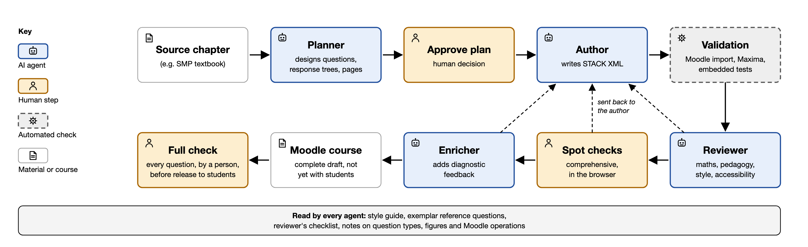
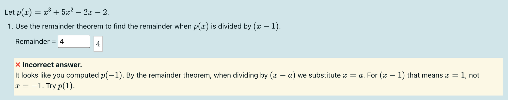
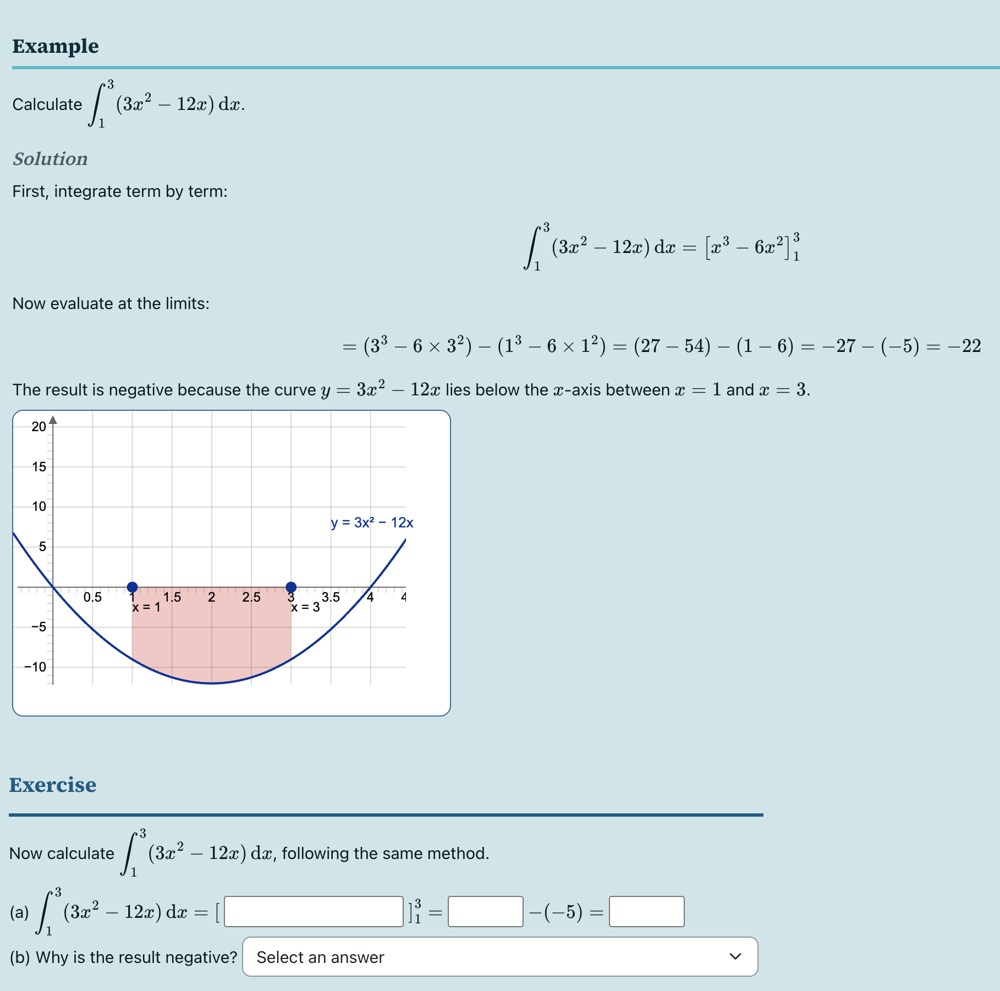
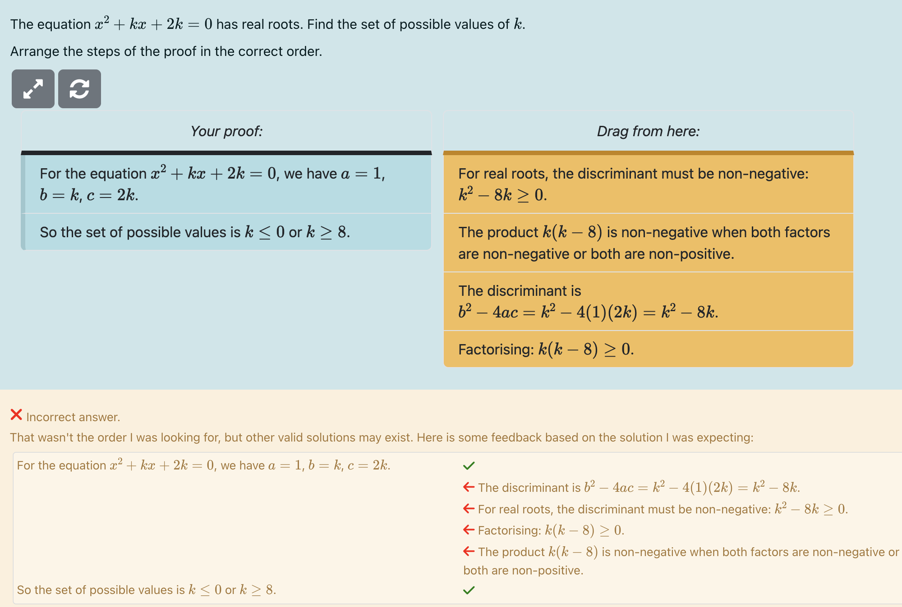

From print to interactive: an SMP A-level textbook built in STACK with AI agents
Ben Davies, University of Southampton, and Adam Clearwater
Many excellent mathematics resources exist only in static form: printed textbooks, lecture notes and worksheets, often the product of years of careful writing and classroom use. In the past, turning them into interactive STACK material has been slow and expensive, so most of the community has understandably stayed away from such projects. The HELM engineering mathematics workbooks, which were translated into STACK quizzes at Edinburgh (Zerva et al., 2021; see the HELM case study are a notable exception. Even so, that work required substantial time and resources.
This case study describes an attempt to use AI to change that: a supervised team of AI agents converting a high-quality print textbook into an interactive digital textbook, keeping the pedagogy of the original, with human oversight throughout.
Context
The School Mathematics Project (SMP) began at the University of Southampton in the 1960s. Over the following decades it produced a celebrated series of school textbooks, written through collaboration between mathematicians, education researchers and classroom teachers (Thwaites, 2012). The archive remains a rich resource of carefully sequenced exposition, worked examples and exercises, refined through years of classroom use. In 2023, SMP Online translated a small part of that archive into interactive STACK workbooks, trialled with around 400 students across four Hampshire schools (Davies, 2023). The trial was encouraging, and the natural next step was full A-level coverage. However, time and resource constraints blocked that step: hand-authoring a whole textbook's worth of STACK questions with rich feedback was not feasible with the time and people available.
Here we describe how we converted a complete textbook, SMP's AQA A-level Core 1, into an interactive STACK resource in Moodle, using a supervised team of AI agents to write the first drafts.
Each chapter of the print book became a Moodle course section, and each section within it became a quiz. Inside a quiz, ordinary textbook material (explanations, key points, worked examples) is interleaved with questions, so a student reads, tries something, gets feedback and reads on. A typical chapter moves from worked-example walk throughs, through randomised practice, to a mixed practice quiz of exam-style questions and a short "Test Yourself" self-check. This is very much in the spirit of Edinburgh's Fundamentals of Algebra and Calculus (FAC) course, which we understand to be a front runner in this use of STACK (Kinnear & Gratwick, 2019). You can read more about FAC in their STACK case study.
How the questions were written
The questions were drafted by AI agents built in Claude Code, Anthropic's tool for agentic work, running the Claude Opus 4.6 and 4.7 models. Most of the gain came from dividing the work between specialised agents, each with a narrow job, orchestrated by a human:
- The planner reads a section of the source textbook and designs its questions: question types, randomised variables, the structure of each response tree, and how material is grouped into pages.
- The author turns the plan into STACK question XML, and hands on only files that pass validation.
- The reviewer independently re-checks the mathematics, pedagogy, style and accessibility against a written checklist, fixes small problems, and returns substantive ones to the author.
- The enricher makes a later pass over approved content, filling empty feedback branches with method hints and adding diagnostic nodes for common errors.
The agents are not a one-way production line. They pass drafts between one another, ask each other for clarification (for example, to reconsider the phrasing of a question or the structure of a response tree), point out problems and request corrections, and escalate to the human when a decision needs human judgement. The reviewer, the enricher and the human spot checks can all send work back to the author.

The agents are defined in plain-text files, so their instructions can be read and edited like any other document. They work from a small set of curated resources: a style guide in which every rule traces back either to a published source (for example, Sangwin (2013) on question design and diagnosing "buggy rules") or to a logged authoring incident; a reference file of exemplar questions that fixes conventions by example; a reviewer's checklist; and reusable notes on question types, figures and Moodle operations. The agents read named documents at defined points rather than retrieving material by similarity search, so the question "what did the model know when it wrote this?" always has a checkable answer.
Validation is automated and strict. Every file is imported into Moodle, run through Maxima, and has its embedded tests run across several random variants before it goes live. A separate script visits the rendered preview pages to catch display problems that the XML alone cannot reveal.
The human role is the one that matters most. A human approves plans, makes the editorial decisions (for example, how to adapt a word problem for the STACK format), and carries out comprehensive spot checks in the browser, sending any problems back to the author. Spot checks during production do not cover every question, so a full human review at the end of the production cycle, before students use the material, is essential.
A fuller account of the protocol is given in our BSRLM paper (Davies & Clearwater, 2026).
Renewing the argument for STACK in the age of generative AI
A STACK question, once written, is a fully deterministic entity. It is executed by a computer algebra system according to rules a human can read, test and audit, and it behaves identically every time. The large language models (LLMs) draft; they do not mark, and they do not have the last word. The student therefore never interacts with an opaque model, but with an auditable, human-verified question.
The value and trustworthiness of this project come from the combination of quality source material (the SMP archive), a deterministic and auditable core (STACK), the scalability provided by the LLM, and the expertise of a human decision-maker with a background in mathematics, education and manual STACK question design (in this case, the first author).
Inside the textbook
As with human-authored resources, most of the effort goes into the feedback. Wherever a common error can be recognised algebraically, the response tree tests for it and names it. When questions are authored by hand, feedback like this is often prohibitively time-consuming to write. With the AI-authoring model described above, (nearly) every question can have bespoke feedback and a genuinely nuanced response tree.
The following examples were designed almost entirely by the AI agents.
A student finding the remainder on dividing by who substitutes is told: "It looks like you computed . By the remainder theorem, when dividing by we substitute ." A student who multiplies surds by adding the numbers under the roots is reminded that , not . A student who evaluates a definite integral at the upper limit only is told they have forgotten to subtract . Where a question asks for a particular form (factorised, expanded, simplest surd form), the marking checks the form as well as the value, so typing the question's own expression back does not earn the marks.

Every question with non-trivial marking carries at least two embedded test cases, one correct answer and one deliberately wrong, so the marking logic is itself tested whenever a file changes. Many quizzes also include JSXGraph figures, often inside worked examples.

Some chapters draw directly on research into assessing mathematical reasoning in STACK: Parsons problems, in which students drag the steps of an argument into order (Mercuri, 2024; see the Parsons problems case study), faded worked examples, and a reading-comprehension task, all following Bickerton and Sangwin (2021).

What is different from previous work
We note that others have been experimenting with AI-assisted STACK authoring, mostly over the last two years. Riyantoko et al. (2026) built a tool that generates a single STACK problem from a teacher's specification; Borio (2026) has reported on a trained AI assistant for authoring and reviewing questions; and case studies on this site describe translating question banks with AI (Osang, 2025) and generating potential response trees for summative grading with an LLM (Feusi & Steiger, 2026). Two things set this project apart from earlier work:
- Timing. Claude Opus 4.5 (November 2025) and especially Opus 4.6 (February 2026) represented a step change in the capability of multi-agent systems like the one described above. In our experience these models could sustain long, multi-step tasks, follow a detailed style guide throughout, and check their own output against validation tools, which made it realistic to hand an agent a whole textbook section rather than a single question.
- The source. The SMP archive is an extremely high-quality starting point, so much of the pedagogic work was already done before the robots got involved.
The biggest change is where the time goes. STACK authoring has always been constrained by the technical work of writing questions and response trees. With this workflow the constraint moves to evaluating and editing drafts, so the scarce skills become editorial and pedagogical rather than technical. For a mathematics educator, that is arguably a better use of time.
Supervising the agents and thinking about quality control
We started with a "production line" mental model: design the process, set it running, collect the output. We now think the work is closer to supervising research assistants or software development interns. Drift, forgetting and loss of focus are not just metaphors when applied to AI agents; they are real, recurring features of the work. Things will go wrong, so the system has to be designed with a human in the loop from the start. In practice that means monitoring in two distinct ways.
The first is supervision during development. Authoring is iterative, and problems tend to arrive as classes rather than one-off mistakes. Further, when a task is difficult, an agent may skip it rather than attempt it badly, which is sometimes worse. The fix in each case is not simply to correct the instance but to provide the feedback needed both to correct the error and to prevent it recurring. As with many aspects of supervision, this is an art, not a science: framing that feedback is a skill that develops with practice, and it contributes significantly to the quality of the output. The system has also become exceptionally good at judging when it needs to ask for help, although that calibration took human effort to build.
Much of what the system has learned lives outside the agents themselves, in the memories, lessons and background context that have accumulated on the local machine. This is one of the active challenges in turning the workflow into an exportable toolkit. Our system knows what we want because we have spent many hours teaching it, and refining our own skill at that teaching along the way. We can share the agents and the memory files, but some of that accumulated context will not suit anyone else's purpose.
The second is human review before anything reaches students. Automated checks are necessary but nowhere near sufficient. Validation confirms that a question imports, that the computer algebra runs and that the embedded tests pass. It cannot confirm that the feedback actually helps a student who is stuck, that a random variant avoids a degenerate case, that the question is faithful to its source, or that the page renders cleanly. Even an independent audit by a second AI model, which found a class of marking defect the whole pipeline had missed, is no substitute for a person looking at a question as a student will see it. It is also very easy to be wrong about what is hard: figures were surprisingly easy to produce, but getting their formatting right was baffling, and only a human looking at the rendered page could tell. Manual quality control is therefore built in twice: comprehensive spot checks during production, and a full check of every question by a person before release to students.
Taken together, we view this approach as a rapid acceleration towards a strong first draft, not a system that produces a finished product out of the box.
What's next
Core 1 is a working prototype and has not yet been used with students at scale, so the immediate priority is a pilot study with students, through a school-based case study during the 2026/27 academic year. Alongside this pilot, a second AQA A-level textbook (Core 2) is complete and a third (Core 3) is under way.
We are also pursuing two further directions. The first is the workflow itself. We have separated the agents, style resources and validation tools from the SMP material into a reusable authoring kit, which we are preparing to share with STACK authors who would like to try a similar approach with their own notes or textbooks. This page will be updated with a link when it is ready for release.
The second is applying this protocol, or something like it, in other contexts. We see two especially promising uses. The first is university lecturers with course notes or worksheets they have never had time to make interactive. The pipeline needs structured source material and a set of standards, and a lecturer who knows their own materials, and how their students use them, is well placed to judge the drafts. The second is interactive textbooks for lower-resource settings, where existing local textbooks are often available but hard to distribute. In these contexts, an interactive digital version has the potential to be transformational.
We note that running AI agents at this scale also has a real computational and environmental cost, and some steps are expensive: a deep independent audit of a single chapter used several hundred thousand tokens. As the protocol has matured we have worked to make it leaner, for example by running fast, stateless checks through the STACK API during authoring and keeping the slower Moodle import as a single final gate, and by narrowing later review passes to where they add most value. In time, we hope and expect that others will iterate on our work and fill our many blind spots.
This is one early attempt, in one context. Whether the approach transfers to other curricula, languages and assessment cultures is a question others are better placed to answer, and we would welcome hearing from anyone who tries.
References
Bickerton, R. T., & Sangwin, C. J. (2021). Practical online assessment of mathematical proof. International Journal of Mathematical Education in Science and Technology, 53(9), 2637–2660.
Borio, S. (2026, July). Using a trained STACK AI assistant for authoring and reviewing STACK questions [Conference presentation]. International Meeting of the STACK Community, Nairobi, Kenya.
Davies, B. (2023, November 4). Bringing SMP into the 21st century with STACK: Opportunities for computer-aided assessment in Key Stage 5 [Conference presentation]. BSRLM Autumn Day Conference, University of Bristol, UK.
Davies, B., & Clearwater, A. (2026). An LLM-based multi-agent protocol for authoring STACK questions at scale. In I. Tasara (Ed.), Proceedings of the British Society for Research into Learning Mathematics, 46(2). BSRLM.
Feusi, J., & Steiger, A. (2026). A workflow for generating PRTs for summative assessment using an LLM [Case study]. STACK. https://stack-assessment.org/CaseStudies/2026/ETH_PRT_LLM/
Kinnear, G., & Gratwick, R. (2019). Developing a fully online course [Case study]. STACK. https://stack-assessment.org/CaseStudies/2019/FAC/
Mercuri, S. (2024). Enhancing proof assessment in STACK through Parson's problems [Case study]. STACK. https://stack-assessment.org/CaseStudies/2024/Parsons/
Osang, G. (2025). Translating STACK questions with AI using DeepL [Case study]. STACK. https://stack-assessment.org/CaseStudies/2025/AI_Translation/
Riyantoko, P. A., Funabiki, N., Brata, K. C., Noprianto, Tyas, S. W., & Prasetya, D. A. (2026). A proposal of a mathematics problem generation tool using generative AI for STACK online assessment system. Mathematics, 14(14), 2481.
Sangwin, C. J. (2013). Computer aided assessment of mathematics. Oxford University Press.
Thwaites, B. (2012). The School Mathematics Project, 1961–1970: A decade of innovation and its sequel. Cambridge University Press.
Zerva, K., Nicholson, I., & Doña Mateo, A. (2021). Translating the HELM workbooks to STACK [Case study]. STACK. https://stack-assessment.org/CaseStudies/2021/HELM/